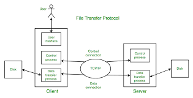

This is an application layer protocol used to transfer files between a client and a server over a TCP/IP network. It allows users to upload, download and manage files on a remote server. FTP operates on a client-server model, where the client initiates a connection to the server and requests file transfers. FTP uses two separate channels for communication: the control channel for sending commands and receiving responses, and the data channel for transferring files. It supports various authentication methods, including username and password, and can be used in both active and passive modes for data transfer. It has 3 methods: ASCII mode which tranfers plain text, EBCDIC mode which is used for systems based on ECDIC encoding and Image (Binary) mode which transfers binary data without modification.
It uses port 21 for Control Connection for commands and port 20 Data Connection for file transfers. The types of FTP include: Anonymous FTP which allows users to access files without authentication, Secure FTP (SFTP) which provides secure file transfer using SSH and FTP over SSL/TLS (FTPS) which adds a layer of security to FTP using SSL/TLS encryption, FTPS (secure) which is an extention between FTP and SSL/TSL to secure data transmission between client and server and Password-Protected FTP which requires credentials to access and manage files on an FTP server.
